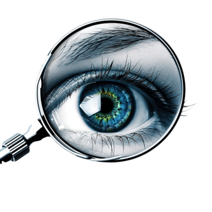
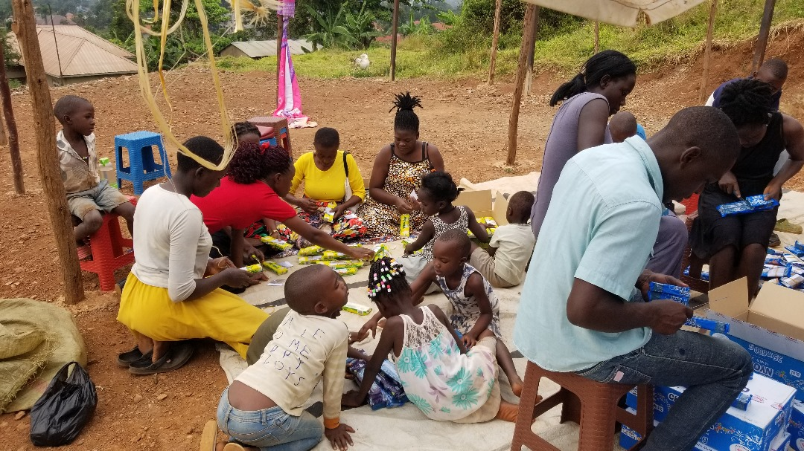
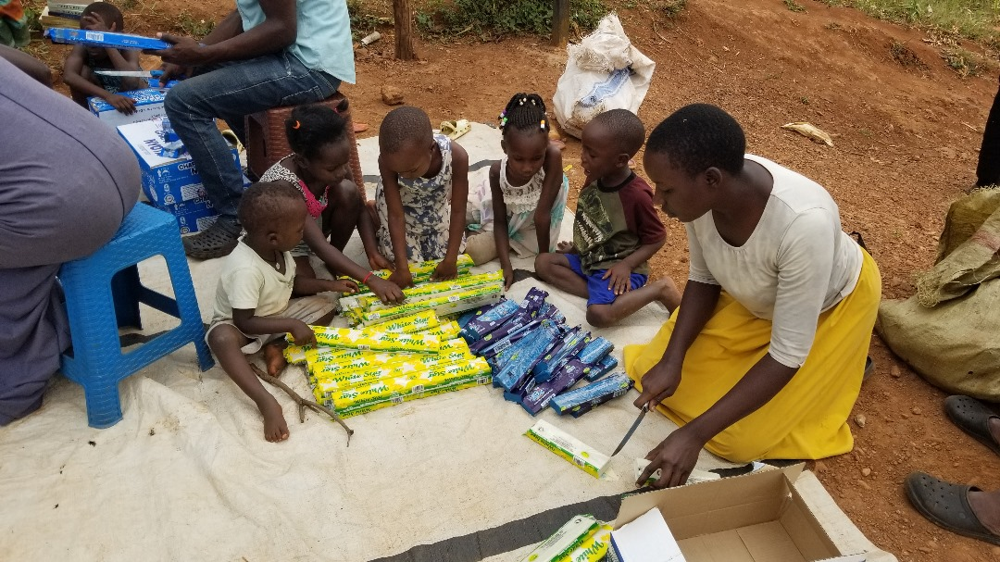

Our Recent Work
Free Medical Eye Camp
Date: July 8, 2025

In partnership with dedicated volunteers and local medical professionals, Amari Amman Foundation launched a successful medical eye camp. Hundreds of residents, many of whom had never accessed eye care, received comprehensive screenings. Free prescription glasses, medication, and surgery referrals were distributed to restore sight and hope. For many, this was their first opportunity to see clearly again an incredible step toward independence, education, and dignity.
Bujowali Village Outreach
Date: March 10, 2025

Our outreach in Bujowali Village brought smiles, support, and sustainability to over 150 families. We distributed essential supplies including food items, school kits, and hygiene materials. Special sessions with children helped raise awareness on cleanliness and well-being. We also identified families in need of ongoing support, creating a deeper connection and mapping future visits. This effort is part of our long term goal to empower rural communities through holistic care.
Love Starts With Listening
Date: May 13, 2025

Our latest awareness campaign centers on a powerful principle: transformation begins when we take time to listen. This initiative trains our volunteers in empathetic listening, encouraging them to understand stories before offering help. Whether serving children, the elderly, or the sick, our teams now approach each mission with hearts open and ears ready. Listening builds trust, and trust builds lasting impact, this campaign is changing the way we serve.
Hello!
Date: January 1, 2024
This was more than a greeting, it was the birth of a movement. Our first post said “Hello” to a future of hope and compassion. Since then, we’ve journeyed into villages, cities, and hearts, building a foundation of love, healing, and restoration. From small beginnings, great things grow. Today, every project and every story traces back to that first brave step: introducing ourselves with honesty, vision, and heart.